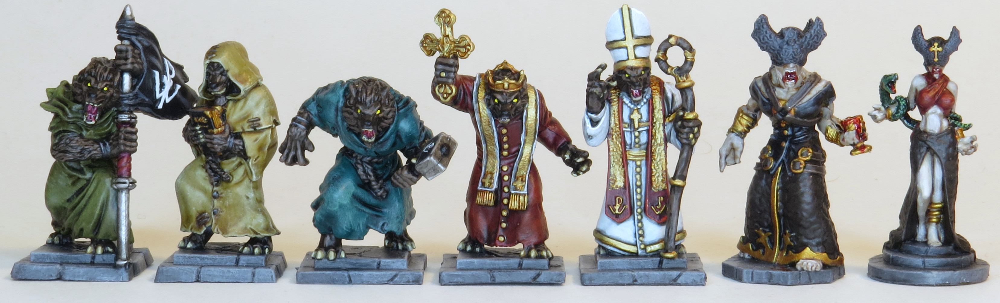
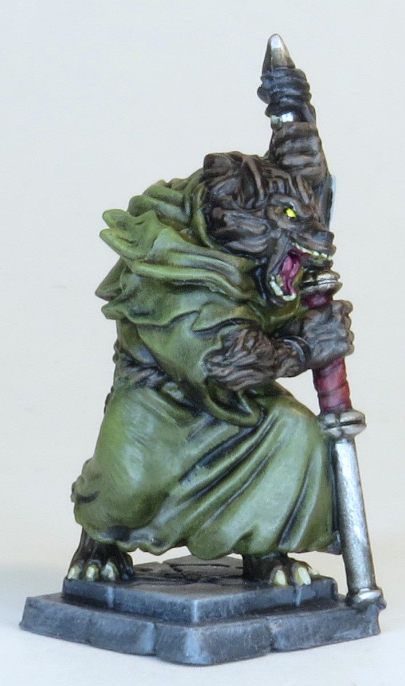
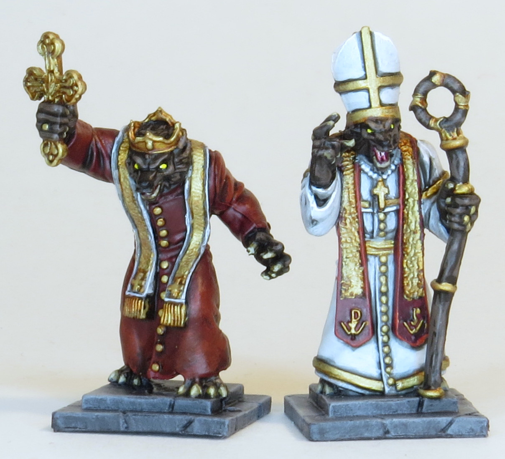
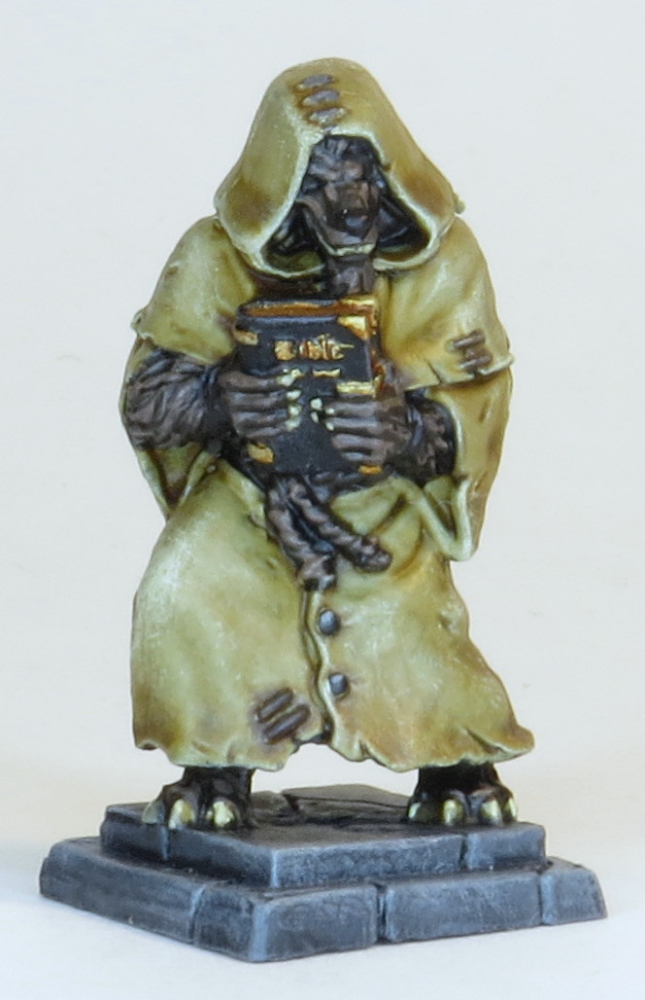
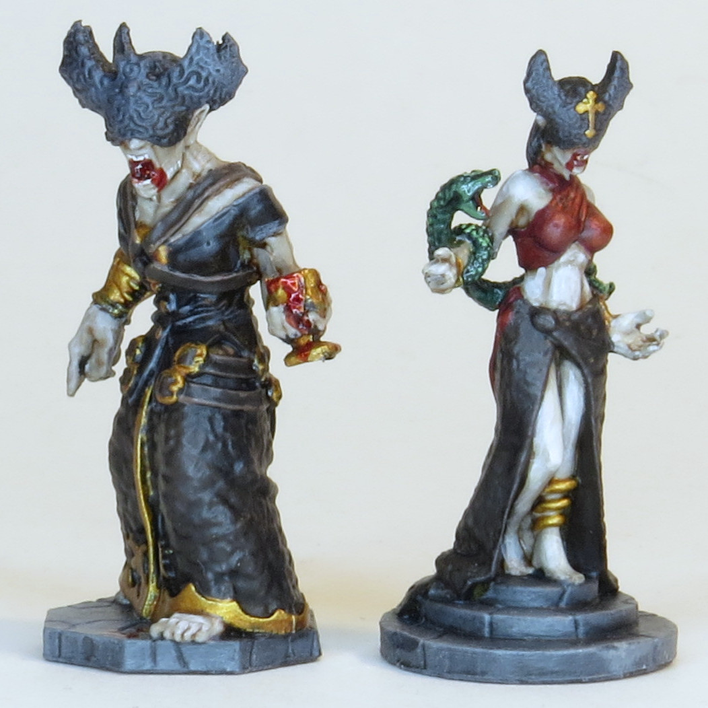
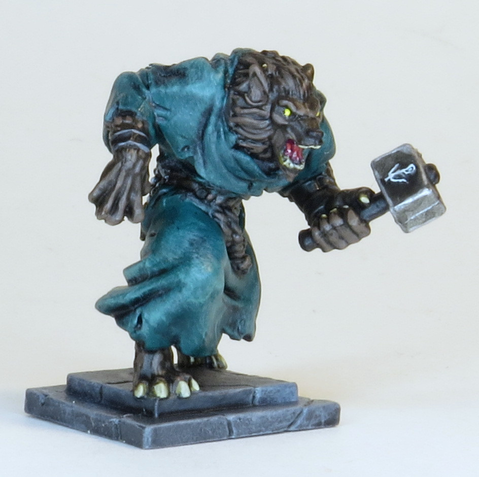

Powerwolf Figures
Figures from the Powerwolf band board game Armata Strigoi. Surprisingly good for a merch tie-in.
 
 
 
Paints Used:
Green Cloak:
Deathworld Forest, Agrax Earthshade all over, drybrush Elysian Green
Beige Cloak:
Zandri Dust, Seraphim Sepia all over, drybrush Ushabti Bone
Blue Cloak:
Kabalite Green, Coelia Greenshade all over, drybrush Sybarite Green
Red Cloak:
Khorne Red, Nuln Oil all over, drybrush Evil Sunz Scarlet
White Sash:
Celestra Grey, Nuln Oil all over, edge highlight Ulthuan Grey
White Cloak:
Celestra Grey, Nuln Oil all over, drybrush Ulthuan Grey and Vallejo White
Red Sash:
Khorne Red, Nuln Oil all over, edge highlight Evil Sunz Scarlet
Steel:
Leadbelcher, Nuln Oil all over, edge hightlight Stormhost Silver
Black:
Abaddon Black, glaze Eshin Grey, edge highlight Eshin Grey and Dawnstone
Wolf Gold:
Retributor Armour, Reikland Fleshshade all over, highlight Liberator Gold
Wolf Fur/Rope/Wood:
Dryad Bark, Agrax Earthshade all over, edge highlight Gorthor Brown
Wolf Eyes:
Vallejo White, Flash Gitz Yellow
Wolf Tongues:
Screamer Pink, Druchii Violet all over, highlight Pink Horror
Wolf Teeth/Claws:
Zandri Dust, Seraphim Sepia all over, highlight Ushabti Bone and Screaming Skull
Vampire Gold:
Retributor Armour, Reikland Fleshshade all over, highlight Retributor Armour
Vampire Skin:
Rakarth Flesh, Reikland Fleshshade all over, highlight/glaze Pallid Wych Flash and Flayed One Flesh
Brown Vampire Cloaks:
Dryad Bark, Agrax Earthshade all over, highlight Dryad Bark
Red Vampire Shirt:
Mephiston Red, Carrorburg Crimson, glaze Evil Sunz Scarlet and Wild Rider Red
Vampire Headdresses:
Abaddon Black, drybrush Eshin Grey
Snake:
Waaagh Flesh, Biel-tan Green all over, highlight Warboss Green and Skarsnik Green
Blood:
Blood for the Blood God
Powerwolf Logos:
Vallejo White
Base:
Mechanicus Standard Grey, Nuln Oil all over, drybrush Dawnstone and Administratum Grey